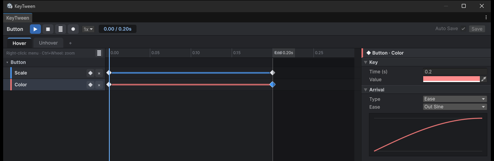

다른 도구와 비교
이 페이지는 같은 연출을 도구마다 어떤 절차로 만드는지 비교합니다. 비교 내용은 모두 이 저장소에서 실제로 만들어 본 결과를 근거로 합니다.
Benchmarks/Assets/Bench/*Driver.cs: 맥박, 목록 등장, 글자 물결의 세 가지 연출을 방식별로 구현한 코드Assets/Reference: Unity-AnimationUI와 UnityScreenNavigator의 데모를 재현한 것Assets/KeyTween/Samples/RPG: RPG 샘플
다른 도구는 이 작업에서 직접 써 본 범위만 적었습니다. 써 보지 않은 기능은 "확인 안 함"으로 표시했습니다. 성능 비교는 성능 페이지에서 따로 다룹니다.
1. 한 연출을 만드는 절차 — 버튼 맥박 (크기 + 색, 반복)
버튼의 크기와 색이 반복해서 바뀌는 맥박 연출을 예로 들어, 도구별 제작 절차와 실행에 필요한 코드를 비교합니다.
한눈에 보기
| 도구 | 만드는 곳 | 실행 코드 |
|---|---|---|
| KeyTween | KeyTween 창 | 0줄 (코드로 부를 때 1줄) |
| Animator | Animation 창 + Animator 창 | 0줄 (기본 상태) |
| DOTween Pro | 인스펙터(DOTweenAnimation) 또는 코드 |
2줄 |
| LitMotion | 코드 | 2개 문장(4줄) |
| AnimationUI | 인스펙터(AnimationUI 시퀀스 목록) |
반복하려면 1줄 |
KeyTween으로 만들기
KeyTween 창에서 만듭니다.
- 버튼에
KeyTween을 추가합니다. - 상태 "Pulse"를 만들고 Loop를 켭니다.
- 트랙 추가 창에서 Scale과 Color를 고릅니다.
- 0 / 0.5 / 1초에 키를 두고, 이징을 InOutSine으로 합니다.
- Play On을 OnEnable로 둡니다.
켜질 때 재생되므로 실행 코드는 0줄입니다. 코드로 부를 때는 1줄이면 됩니다.
anim.Play("Pulse");
KeyTween의 상태, 트랙, 키
위 절차에 나온 세 가지 개념입니다.
- 상태: 이름이 붙은 연출 하나
- 트랙: 상태 안에서 크기나 색 같은 값 하나를 바꾸는 줄
- 키: 트랙 위에서 특정 시점의 값
상태 만들기, 트랙 추가, 키 편집은 모두 아래의 KeyTween 창에서 처리합니다.

Animator로 만들기
Animation 창과 Animator 창에서 만듭니다.
- Animation 창에서 Create를 누릅니다. 클립과 컨트롤러 에셋 2개가 생깁니다.
- Record로 키를 찍습니다.
- 클립의 Loop Time을 확인합니다.
- 컨트롤러에서 기본 상태를 확인합니다.
기본 상태로 재생되므로 실행 코드는 0줄입니다. 다른 연출로 바꾸려면 상태와 전환을 쓰거나 Play를 부릅니다.
DOTween Pro로 만들기
인스펙터(DOTweenAnimation) 또는 코드로 만듭니다.
- 인스펙터: 효과 하나당 컴포넌트 하나를 붙입니다(크기 1개 + 색 1개). Loops는 −1, Yoyo로 둡니다.
- 코드: 아래 2줄입니다.
DOScale(...).SetLoops(-1, Yoyo)
DOColor(...)...
LitMotion으로 만들기
코드로만 만듭니다. 값마다 Motion 하나를 만들고 대상에 바인딩하며, 맥박 전체는 2개 문장, 4줄입니다. 그중 크기 쪽은 다음과 같습니다.
LMotion.Create(...).WithLoops(-1, Yoyo).BindToLocalScale(rt)
AnimationUI로 만들기
인스펙터의 AnimationUI 시퀀스 목록에 단계를 넣습니다.
- 크기·색 단계
- Wait
- 되돌리는 단계
- Wait
반복 기능이 없으므로, 반복하려면 코드 1줄이 필요합니다.
OnAnimationEnded += Play
2. 연출별로 드는 일
측정 프로젝트에서는 모든 방식을 같은 조건에서 재기 위해 전부 코드로 구현했습니다. 하지만 실제로 쓸 때 중요한 차이는 연출을 에디터에서 만들 수 있는지입니다.
연출마다 만드는 곳
연출마다 각 도구에서 어디서, 어떻게 만드는지 정리했습니다.
| 연출 | KeyTween | Animator | DOTween Pro | LitMotion | AnimationUI |
|---|---|---|---|---|---|
| 맥박 반복 | 에디터(창) | 에디터(창) | 인스펙터 또는 코드 2줄 | 코드 2문장 | 인스펙터(시퀀스 4단계) + 반복 코드 1줄 |
| 목록 등장 (현재 위치 → 0) | 에디터, Start = Current Value | 에디터, 시작 값은 클립에 고정 | 코드 2줄(From) |
코드 2문장 | 인스펙터 |
| 글자 물결 (글자 단위) | 에디터(Char 트랙 + Stagger) | 불가 | 코드: DOTweenTMPAnimator + 글자마다 반복문 |
코드: 글자마다 BindToTMPCharPositionY 반복문 |
불가 |
| 숫자 세기 (재화) | 에디터(Number 트랙) + 끝 값 1줄(With(...).WithEndValue) |
확인 안 함 | 코드 | 코드 | 불가 |
| 공유 요소 전환 | 에디터(상태) + 상대 쪽 키 1줄(KeyTweenSharedElement) |
확인 안 함 | 코드 | 코드 | 불가 |
| UIEffect 값 (디졸브 등) | 에디터(UIEffect 트랙 14종) | 에디터(직렬화 필드 기록) | 코드(DOTween.To) |
코드(Bind) |
불가 |
3. 기능 비교 (이 저장소에서 확인한 것)
이 저장소에서 직접 확인한 기능만 표시했습니다.
표의 기호
- ✅: 지원
- ❌: 미지원
- 확인 안 함: 써 보지 않아 확인하지 못한 항목
기능 표
| 기능 | KeyTween | Animator | DOTween Pro | LitMotion | AnimationUI |
|---|---|---|---|---|---|
| 에디터에서 키프레임 편집 | ✅ 타임라인 창 | ✅ Animation 창 | 인스펙터 값(키프레임 아님) | ❌ (별도 패키지는 확인 안 함) | 시퀀스 목록(시작·길이) |
| 녹화 | ✅ ● (Scene·Inspector 변경 → 키) | ✅ Record | ❌ | ❌ | ❌ |
| 편집 모드 미리보기 | ✅ 재생·스크럽·반복 | ✅ | 확인 안 함 | ❌ | 확인 안 함 |
| Play 중 고친 값 남기기 | ✅ Auto Save · Save | Animation 창 편집은 남음 | ❌ | ❌ | 확인 안 함 |
| 현재 값에서 시작 | ✅ Start = Current Value | ❌ (클립 값) | ✅ From 생략 시 |
✅ | ❌ |
| 역재생 | ✅ PlayReversed (현재 값 시작도 원래 자리로) |
속도 −1(파라미터) | ✅ PlayBackwards |
확인 안 함 | ✅ PlayReversed |
| 반복 | ✅ 상태 Loop | ✅ Loop Time | ✅ | ✅ | ❌ (다시 Play) |
| 글자 단위 | ✅ 에디터 | ❌ | 코드 | 코드 | ❌ |
| 이벤트·사운드 트랙 | ✅ | 이벤트 ✅ | 콜백(코드) | 콜백(코드) | ✅ 이벤트·사운드 단계 |
| 화면 전환 컨테이너 | ✅ Page·Modal·Sheet | ❌ | ❌ | ❌ | ❌ |
| await | ✅ Awaitable, UniTask 선택 |
❌ | ✅ (AsyncWaitForCompletion) |
✅ | ❌ |
| 시작·끝 콜백 | ✅ 에디터(상태의 Callbacks) + 코드(StateCompleted 등, WithOnComplete) |
확인 안 함 | 코드(OnComplete 등) |
코드(WithOnComplete 등) |
확인 안 함 |
| 코드로 연출 만들기 | ✅ Build(state).Track(...).Key(...) |
확인 안 함 | ✅ 기본 방식 | ✅ 기본 방식 | 확인 안 함 |
| 중간 시간부터 재생 | ✅ Play(state, time) |
확인 안 함 | 확인 안 함 | 확인 안 함 | 확인 안 함 |
| 일시 정지와 무관한 시간 | ✅ Time = Unscaled | ✅ Update Mode | 확인 안 함 | 확인 안 함 | 확인 안 함 |
| 필요한 패키지 | Unity 공식만(uGUI·Mathematics·Burst) | 내장 | DOTween (Pro는 유료) | LitMotion (+ Burst·Collections) | AnimationUI 소스 |
4. 고칠 때 드는 일
이미 만든 연출을 고칠 때 드는 작업을 도구별로 비교합니다.
바꾸는 것마다 드는 일
코드 트윈은 DOTween, LitMotion처럼 코드로 연출을 만드는 라이브러리를 말합니다.
| 바꾸고 싶은 것 | KeyTween | 코드 트윈 (DOTween·LitMotion) | Animator |
|---|---|---|---|
| 길이·이징 | 창에서 키를 끌거나 이징 선택, 바로 미리보기 | 코드 수정 → 컴파일 → Play로 확인 | Animation 창에서 키 이동(이징은 커브 접선) |
| 연출 추가 | 상태 하나 추가 | 메서드·필드 추가 | 클립·상태·전환 추가 |
| Prefab마다 조금 다르게 | 자식 상태 오버라이드(현재 Prefab에서) | 코드 분기 또는 값 노출 | Override Controller |
| 디자이너가 직접 | ✅ 코드 없음 | ❌ (DOTween Pro 인스펙터는 일부 가능) | ✅ |
5. 정리
도구별 특징과 성능 비교 결과를 요약합니다.
KeyTween
연출을 코드 없이 KeyTween 창에서 만들고, 만든 즉시 미리 볼 수 있습니다. 코드 트윈에서만 가능하던 다음 기능도 에디터에서 쓸 수 있습니다.
- 현재 값에서 시작하기
- 글자 단위 연출
- await
재생할 때마다 달라지는 값(끝 값, 이징, 시작 시간, 콜백)은 코드에서 With로 정하고, 코드만으로 상태를 만들 때는 Build를 씁니다. 그래서 코드 트윈처럼 코드로 쓰는 방식도 함께 쓸 수 있습니다.
성능
IL2CPP 빌드에서 맥박 2,000개의 자체 비용을 비교했습니다. 자체 비용은 같은 값을 스크립트로 직접 넣는 경우보다 더 드는 시간입니다.
- KeyTween: +0.38ms
- DOTween Pro: +0.40ms
- LitMotion: +0.34ms
- Animator: +2.85ms
- AnimationUI: +2.00ms
KeyTween은 DOTween Pro, LitMotion과 같은 수준이며, Animator와 AnimationUI보다 훨씬 가볍습니다.
- 글자 효과는 텍스트 100개에서 0.61ms로 가장 빠릅니다. 코드 트윈은 약 2.1ms입니다.
- 재생 중에는 GC 할당이 없습니다.
자세한 내용은 성능을 참고하세요.
코드 트윈 (LitMotion, DOTween)
재생을 시작하는 비용은 LitMotion이 가장 낮습니다. 다만 연출이 코드 안에 있으므로, 미리 보거나 고칠 때마다 컴파일이 필요합니다. KeyTween에서는 움직임을 에디터에 두고, 바뀌는 값만 With로 코드에서 정하는 식으로 나눌 수 있습니다.
Animator
에디터에서 만들고 녹화할 수 있지만, UI 연출에서는 가장 무겁습니다. 다음 기능이 없습니다.
- 글자 단위 연출
- 현재 값에서 시작하기